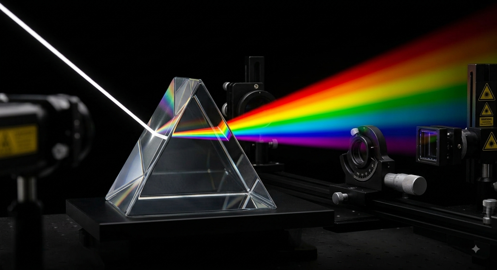

A dispersão luminosa é o fenômeno óptico no qual uma onda de luz policromática (como a luz branca solar) é decomposta em suas cores constituintes primárias ao atravessar um meio transparente dispersivo. Este processo fundamenta-se nas propriedades intrínsecas da propagação de ondas eletromagnéticas em meios materiais, revelando a natureza complexa e fascinante da luz visível.
Historicamente, foi Sir Isaac Newton quem, em 1666, provou que a luz branca não era pura ou imutável, mas sim uma mistura heterogênea de diferentes radiações cromáticas, rebatendo as teorias aristotélicas vigentes na época através de seu célebre experimento com prismas de vidro polido.
O cerne físico da dispersão reside na dependência do índice de refração (n) de um material em relação à frequência ou ao comprimento de onda (λ) da luz que o atravessa. Esse comportamento é regido por leis fundamentais da óptica geométrica e ondulatória:
Matematicamente expressa por n₁·sin(θ₁) = n₂·sin(θ₂), ela dita que o ângulo de desvio da luz ao mudar de meio depende diretamente do índice de refração do material.
Em meios dispersivos normais (como o vidro ou a água), o índice de refração diminui à medida que o comprimento de onda aumenta. Portanto, a luz violeta (menor λ) sofre um desvio muito mais acentuado do que a luz vermelha (maior λ).
O uso de um prisma triangular equilátero potencializa essa separação. Como as superfícies de entrada e saída não são paralelas, os desvios angulares sofridos por cada cor somam-se sequencialmente, abrindo o leque de cores visíveis de forma nítida.
Abaixo está apresentada a evidência visual coletada durante o desenvolvimento prático deste projeto integrador. O arranjo experimental utiliza uma fonte focalizada de emissão luminosa direcionada contra um corpo prismático, mapeando os ângulos exatos de refração e a pureza do espectro gerado.

Explore o comportamento físico da luz em tempo real. Ajuste o ângulo de incidência do feixe luminoso através dos controles ou clique diretamente no painel para mover o laser. Observe como o índice de refração altera dinamicamente o desvio angular de cada espectro cromático.
A execução deste projeto integrador permitiu validar experimentalmente e teoricamente os princípios que regem a óptica física e ondulatória. A dispersão da luz por refração prova que as cores não são propriedades adicionadas pelo vidro, mas sim constituintes fundamentais da própria luz branca que viajam a velocidades ligeiramente distintas dentro de meios materiais.
Compreender o comportamento do índice de refração em função do comprimento de onda é indispensável não apenas para explicar fenômenos naturais cotidianos, como o arco-íris, mas também para o avanço tecnológico moderno, influenciando o desenvolvimento de lentes fotográficas corretivas de alta precisão, sistemas de espectroscopia científica e redes de transmissão de dados via fibra óptica.
O referencial teórico utilizado para a construção e validação científica desta página obedece rigorosamente aos padrões normativos acadêmicos vigentes: